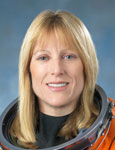

Lyndon B. Johnson Space Center
Houston, Texas 77058
|
National Aeronautics and Space Administration Lyndon B. Johnson Space Center Houston, Texas 77058 |
 |
Biographical Data |
||
KATHRYN P. (KAY) Hire (CAPTAIN, U.S. Navy)
NASA ASTRONAUT
PERSONAL DATA: Born in Mobile, Alabama, Hire also considers Merritt Island, Florida a hometown. She enjoys sailing, fishing, scuba diving, and snow skiing.
EDUCATION: Murphy High School, Mobile, Alabama, 1977. Bachelor of Science, U.S. Naval Academy, 1981. Master of Science, Florida Institute of Technology, 1991.
ORGANIZATIONS: Association of Space Explorers, Association of Naval Aviation, U.S. Naval Academy Alumni Association, U.S. Sailing Association.
EXPERIENCE: Commissioned as a Naval Officer in 1981, Hire earned her Naval Flight Officer Wings in 1982. She flew worldwide oceanographic research missions to 25 countries aboard specially configured P-3 Orion aircraft with Oceanographic Development Squadron Eight (VXN-8). She later taught airborne navigation for three years to over 600 student naval flight officers. In 1989, Hire left full time naval ranks and began parallel but separate civilian and military careers as a Space Shuttle Engineer and as a Navy Reserve Officer.
On May 13, 1993, Hire, became the first female in the U. S. military to be assigned to a combat aircrew, when she reported to Patrol Squadron Sixty-Two (VP-62). Flying aboard the P-3 maritime patrol aircraft, she participated in Atlantic and Caribbean operations. Hire continued her Navy Reserve duty with various units based in Florida, Louisiana, and Texas. She was recalled to active naval duty supporting Operation Enduring Freedom and Operation Iraqi Freedom as a member of U .S. Naval Central Command staff. Hire later resumed part-time reserve status and served as Commanding Officer of Space and Naval Warfare Systems Command (SPAWAR) Unit 1010. She is currently the Commanding Officer of the Office of Naval Research/ Naval Research Lab (ONR/NRL) Unit 113, supporting projects at the Naval Post Graduate School, Monterey, California.
NASA EXPERIENCE: Hire started at NASA’s Kennedy Space Center (KSC) in 1989 as an engineer for Lockheed Space Operations Company. She worked as a Space Shuttle Orbiter Mechanical Systems Engineer, then Test Project Engineer, and eventually Supervisor of Space Shuttle Orbiter Mechanical Systems and Launch Pad Access Swing Arms. During her six years at KSC, she processed Space Shuttles from landing through ground preparations and launch countdowns for over 40 missions.
Hire reported to the Johnson Space Center for Astronaut training in March 1995. She has worked in mission control as a spacecraft communicator (CAPCOM), and served as the Astronaut Office Lead for Shuttle Avionics Integration Laboratory (SAIL), Shuttle Payloads, and Flight Crew Equipment. She currently serves on the Astronaut Support Personnel (ASP) team, traveling to Florida in support of crew launch and landing operations conducted at the Kennedy Space Center. Hire flew on Space Shuttle missions STS-90 (1998) and STS-130 (2010). She has logged over 711 hours in space.
SPACE FLIGHT EXPERIENCE: STS-90 Neurolab (April 17 – May 3, 1998). Hire flew as Mission Specialist 2, the flight engineer during the 16-day Spacelab flight. The seven-member crew aboard Space Shuttle Columbia served as both experiment subjects and operators for 26 life science experiments focused on the effects of microgravity on the brain and central nervous system. The STS-90 crew orbited the Earth 256 times, and covered 6.3 million miles.
STS-130 (February 08–21, 2010). Space Shuttle Endeavour launched and landed at night on the thirty-second mission to assemble the International Space Station. The STS-130 crew delivered and outfitted Node 3, also known as Tranquility, and the Cupola, a seven-windowed portal for the space station. As Mission Specialist 1, Hire operated the robotic arms, led the transfer of 4500 pounds of cargo, and helped install water recycling, air cleaning and cooling, and crew exercise equipment in Node 3 and Cupola. During the 2-week mission, Endeavour and crew travelled over 5.7 million miles and completed 217 orbits of the earth.
MARCH 2010